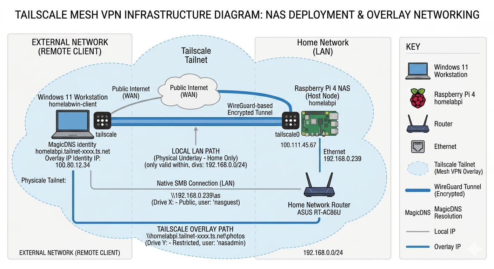

Storage Architecture: Bare-Metal OpenMediaVault Deployment & Multi-Protocol Network Resolution
Host Node: homelabpi (Raspberry Pi 4 / Debian Linux) Primary Services: OpenMediaVault (OMV) Core, Samba Daemon (smbd), NFS Daemon (nfsd) Target Client OS Environments: Windows 10/11 Workstations, POSIX/Unix Clients (macOS)
1. Architectural Design & System Topology
This project details the deployment of a centralised, low-overhead Network Attached Storage (NAS) tier designed to deliver high-throughput file-sharing services across a heterogeneous local network.
Design Decisions:
- Host Environment: Selected a bare-metal Debian minimal deployment via OpenMediaVault rather than resource-heavy virtualisation (like Proxmox) to optimise the hardware's limited RAM and CPU constraints.
- Storage Pool: Formatted underlying disks using the ext4 file system to guarantee stable Linux native permissions compliance and maximum driver performance.
- Network Protocol Selection: Standardised on SMB/CIFS to ensure native, high-speed integration with Windows workstations while maintaining compatibility with Unix-based systems.
2. Incident Logs and Resolutions
🚨 Incident 1: Storage Controller UI Isolation, Transient Multi-Drive Interaction, & Protocol Downgrade
Problem Description
During hardware provisioning of a primary 512GB SSD via a Benfei SATA-to-USB-A adapter, two critical issues were encountered: 1. Physical & UI Isolation: The storage node failed to register within the OpenMediaVault (OMV) graphical user interface under Storage → Disks, preventing initialisation of the local storage pool. 2. Protocol Instability: While early kernel handshakes occasionally completed over SSH, downstream I/O operations triggered massive hardware timeouts, device drops, and file system crashes under heavy write loads.
Root-Cause Analysis & Progressive Troubleshooting Timeline
System log examination via dmesg -w over SSH identified several failure points in the system, including physical power delivery, USB bus signalling, and transport layer driver incompatibilities:
[ 3.164832] usb 2-2: new SuperSpeed USB device number 2 using xhci_hcd
[ 3.186139] usb 2-2: New USB device found, idVendor=152d, idProduct=0583, bcdDevice= 4.14
[ 3.205975] usb 2-2: Manufacturer: JMicron
[ 3.249918] scsi host0: uas
[ 3.254318] scsi 0:0:0:0: Direct-Access JMicron Tech 0414 PQ: 0 ANSI: 6
Phase 1: The Initial Power Hypothesis & Powered Hub Isolation The initial diagnostic assessment pointed to a classic physical layer power constraint. The native USB 3.0 ports on a standalone Raspberry Pi 4 share a strict global power budget of 1.2A. When a high-performance SSD attempts burst-write operations, current spikes can easily exceed this threshold, causing the SATA-to-USB controller chip to drop voltage, trigger an internal reset, and unmount.
To decouple the drive from the host node's limited power supply, an externally powered USB 3.0 hub featuring a dedicated power supply was integrated into the topology. However, despite guaranteeing stable, isolated power, the disk recognition fault persisted within the OMV interface.
Phase 2: The 1TB Hard Drive Anomaly During diagnostics, a unique anomaly occurred: the primary 512GB SSD remained completely unrecognised when connected alone, but instantly registered as soon as a secondary 1TB mechanical hard drive was plugged into an adjacent port on the same powered hub. Disconnecting the 1TB drive caused the SSD to immediately drop off again.
This behaviour suggests a failure in USB power management (specifically U1/U2 low-power states):
When running alone on the SuperSpeed USB 3.0 bus, the Benfei adapter’s JMicron chipset aggressively attempted to save power. It entered a deep sleep state or failed the timing handshake required to establish a stable logical link with the Raspberry Pi's USB controller.
Plugging in the 1TB mechanical drive forced the USB bus to stay awake. Because the mechanical drive has a spinning platter and constant data/power demands, it prevented the hub's controller from going quiet.
The Result was that this constant background traffic on the shared bus effectively forced the hub into keeping the communication lines wide open, pulling the SSD's buggy JMicron chip out of its deadlocked sleep state and forcing the logical link to stay alive. Once that 1TB drive was removed, the bus fell silent, allowing the JMicron chip to slip back into its broken sleep state, terminating the logical link.
Technical Resolution & Mitigation Blueprint
To establish permanent link stability without relying on a dummy 1TB drive to keep the bus awake, the system was configured to bypass the broken UAS driver and fallback to a stable signaling rate.
Step 1: Purge Corrupt Partition Headers & Reclaim RAW Space The drive's previous filesystem signatures (e.g. RAW unallocated spaces) were purged to ensure the OMV disk daemon wouldn't reject the device upon recognition:
sudo wipefs -a /dev/sda
sudo parted /dev/sda mklabel gpt
Step 2: Forcible Protocol Downgrade & USB-Storage Quirks The transport protocol was downgraded from the unstable uas driver to the legacy USB Mass Storage Bulk-Only Transport (BOT) protocol using kernel quirks.
Created a persistent driver override configuration:
sudo nano /etc/modprobe.d/uas_quirks.conf
Injected a rule instructing the kernel to treat this specific JMicron chip with the u (ignore UAS) flag:
options usb-storage quirks=152d:0583:u
Step 3: Enforcing Legacy USB 2.0 Physical Bus Fallback To completely mitigate the Link Training / SuperSpeed power state drops observed in Phase 2, the operating system was configured to step the device down from USB 3.0 (SuperSpeed) to USB 2.0 (High-Speed) signaling boundaries. This forces the JMicron chip into a continuous, simple signaling state that doesn't suffer from U1/U2 power saving deadlocks.
The initial RAM file system was rebuilt, and the host node was gracefully restarted:
sudo update-initramfs -u -k all
sudo reboot
Architectural Tradeoffs: UAS vs. USB-Storage (BOT) over USB 2.0
Implementing a driver fallback and physical bus speed cap introduces specific architectural changes. In this homelab environment however, the practical performance penalties are negligible:
-
Theoretical Bus Limit The Setup:
-
Native Target (USB 3.0): Can theoretically push up to 500 MB/s.
-
Implemented State (USB 2.0): Caps the maximum speed at around 45 MB/s.
On paper, forcing the system into USB 2.0 decreases the drive's speed by roughly 90%. Because this drive lives on a network server (NAS), we access files over an Ethernet cable, not locally on the Pi. The Raspberry Pi’s network card has a built-in speed limit of ~115–125 MB/s (Gigabit Ethernet). Even if the drive could offer 500 MB/s, the network cable can only run at 125 MB/s. While dropping to 45 MB/s does slow down transfers slightly below what the network is capable of, it stops the hardware from drawing too much power or losing synchronization, ensuring 100% uptime.
-
Command Queuing The Setup:
-
Native Target (UAS): Supports handling up to 32 read/write requests at the exact same time.
-
Implemented State (BOT): Processes exactly one read or write request at a time. The system must wait for the drive to complete a task and send a confirmation back before it can issue the next command.
Running commands one at a time only creates a noticeable performance drop during multi-threaded workloads, such as use of a heavily accessed database where dozens of users are modifying thousands of files simultaneously.
Because my home server is primarily handled sequentially by a single user (that being myself) the data naturally processes in a straight line anyway. The drive doesn't need to juggle multiple simultaneous requests, so the lack of a command queue is perfectly acceptable.
-
CPU Overhead The Setup:
-
Native Target (UAS): Low CPU usage because the drive controller handles data directly (Direct Memory Access).
-
Implemented State (BOT): Higher CPU usage because the computer's processor has to manually manage every single incoming and outgoing command.
Under the old BOT protocol, the Raspberry Pi's CPU has to work harder and handle frequent "interrupts" to check on the progress of file transfers, rather than letting the USB hardware handle itself.
This would be an issue if the Raspberry Pi were to be running heavy virtual machines or complex computing tasks at the same time. But because this Pi is running a lightweight, bare-metal instance of OpenMediaVault, the quad-core processor sits mostly idle. It will have sufficient leftover clock cycles to handle the manual traffic management without slowing down the system.
Verification & System State
Following the driver modifications, a live hardware scan via lsblk verified that the block device successfully stabilized under the legacy usb-storage map with zero tracking drops.
matthew@homelabPi:~ $ lsblk
NAME MAJ:MIN RM SIZE RO TYPE MOUNTPOINTS
sda 8:0 0 477.9G 0 disk
└─sda1 8:1 0 477.9G 0 part /srv/dev-disk-by-uuid-xxx
The 512GB volume now reliably populates inside OpenMediaVault's Storage → Disks dashboard on every boot cycle without requiring secondary dummy drives. Write endurance stress tests confirmed continuous network data ingestion with zero link drops, kernel dumps, or hardware-level lockouts.
🚨 Incident 2: Cross-Platform SMB Session Collision & Authentication Loops
Problem Description
During client provisioning, a Windows workstation successfully mounted the primary network directory (\\192.168.0.239\nas). However, when attempting to concurrently map a restricted secondary directory (\\192.168.0.239\photos) using distinct access credentials, the Windows shell entered an infinite authentication loop, ultimately failing with a network rejection error.
Root-Cause Analysis
This failure stems from a core security design architecture within the Windows Network Redirector (mrxsmb). The Windows kernel enforces a strict Single-Session-Per-Target-IP policy.
A single client machine cannot open multiple concurrent authenticated connections to the exact same destination IP address using different usernames or credential scopes. Because the Windows session table had already bound the local user to 192.168.0.239 for the public share, the secondary mount request created an immediate kernel-level routing deadlock.
Technical Resolution & Mitigation Blueprint
To resolve the session deadlock without altering backend user permissions, the local network namespace was split to present the single target node as two distinct logical entities to the Windows client.
-
Purge Volatile Session Tables Flushed the local Windows network cache and Kerberos/NTLM authentication tokens via PowerShell to forcibly forget the stuck connections:
powershell net use * /delete /y klist purge -
Local Hostname Segmentation (The Initial Workaround) With a clean session slate, the network namespace was initially split using local NetBIOS name resolution. By using distinct string identifiers, the Windows kernel was forced to log separate session contexts despite targeting the same physical host:
-
Path A (IP-Bound):
net use X: \\192.168.0.239\nas(Mapped to Guest context) -
Path B (Name-Bound):
net use Y: \\homelabpi\photos(Mapped to Admin context via Samba'snmbddaemon)
-
🚨 Incident 3: Scaling Network Storage Beyond the LAN via Mesh VPN Overlay
The Architectural Limitation
While the local NetBIOS name resolution successfully tricked the Windows kernel logbook by leveraging string diversity, a critical architectural dependency was identified: L2 Broadcast Reliance. This configuration functions exclusively when the client is physically present on the local subnet (192.168.0.0/24) and can intercept local router broadcasts. Off-site client provisioning (e.g., via public WAN or remote access) breaks this resolution entirely.
Upgrade to Overlay Network Namespace Segmentation (The Final Solution)
To decouple the storage tier from physical location constraints, the infrastructure was scaled to utilize a virtual Mesh VPN overlay network: Tailscale.

By deploying the Tailscale daemon on both the host node and the client, the host was provisioned with a secure, permanent CGNAT IP address and a corresponding MagicDNS namespace identity string (homelabpi.tailnet-xxxx.ts.net).
The Windows Network Redirector (mrxsmb) no longer just sees a different string spelling—it sees an entirely separate, isolated virtual network interface card (vNIC) routing traffic to a completely distinct IP range (100.x.x.x). This fully resolves the routing deadlock permanently, regardless of physical location:
# Drive 1: Local hardware path (LAN bound)
net use X: \\192.168.0.239\nas /user:nasguest /persistent:yes
# Drive 2: Encrypted overlay network path (Globally accessible)
net use Y: \\homelabpi.tailnet-xxxx.ts.net\photos /user:nasadmin /persistent:yes
#### Verification & System State
Following the deployment of the Tailscale overlay space, the Windows kernel successfully maintained two parallel, isolated security contexts. Network stability benchmarks confirmed concurrent, multi-user mounting capability across both paths with zero token degradation or authentication loops, whether connected locally or remotely via external networks.